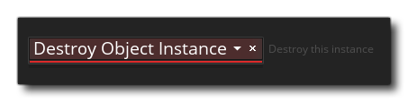

Les préférences de glisser-déposer sont utilisées pour définir la façon dont l'éditeur de script Glisser-Déposer apparaît. Les différentes options disponibles sont listées ci-dessous avec une description de ce que chacun fait.
- Emplacement par défaut de la boîte à outils DnD™: Par défaut, la boîte à outils DnD™ (où toutes les différentes bibliothèques d'actions sont conservées) est placée à droite de l'éditeur, mais vous pouvez utiliser cette option par défaut.
- Mode de visibilité de l'aperçu des noeuds DnD™: Un noeud "overview" est le court texte descriptif qui apparaît à côté de certaines actions dans l'espace de travail Action, par exemple, l'action Destroy Instance:  Vous pouvez choisir de les activer toujours, les activer uniquement si l'action est réduite (paramètre par défaut) ou les désactiver complètement.
- Réponse automatique à la conversion DnD™ en langage GameMaker: lorsque vous convertissez un événement ou un script Glisser-Déposer en code GML, vous recevez par défaut un message vous avertissant de ce que vous allez faire et vous demandant si vous souhaitez continuer. Régler cette option sur "OK" va tout simplement accepter le changement sans afficher le message.
- Réponse automatique à la suppression d'un nœud DnD™: Lorsque vous supprimez un nœud d'événement Drag & Drop, vous recevez par défaut un message vous avertissant de ce que vous allez faire et vous demandant si vous souhaitez continuer. Régler cette option sur "OK" permettra simplement d'effacer la suppression sans afficher le message.
- Taille maximale des vignettes d'action de la boîte à outils DnD™: Au bas de la boîte à outils Action, vous disposez d'un curseur pour modifier la taille des icônes Glisser-déplacer. Ce paramètre sera utilisé pour définir la taille maximale autorisée (par défaut 64px).
- Taille minimale des vignettes d'action de la boîte à outils DnD™: Au bas de la boîte à outils Action, vous disposez d'un curseur pour modifier la taille des icônes Glisser-déplacer. Ce paramètre sera utilisé pour définir la taille minimale autorisée (16px par défaut).
- Taille par défaut pour les miniatures d'actions de la boîte à outils DnD™: Ce paramètre sera utilisé pour définir la taille par défaut de toutes les icônes d'action dans la boîte à outils (32px par défaut).
- Nombre maximum d'actions récemment utilisées à afficher: Dans la boîte à outils d'action, il y a une bibliothèque en haut qui contient les actions que vous avez utilisées le plus récemment. Vous pouvez utiliser cette option pour modifier le nombre maximum d'actions récentes qui seront affichées (5 par défaut).
- Temps d'arrêt de la souris pour commencer à faire glisser des nœuds (ms): Lorsque vous cliquez sur un nœud et le faites glisser, vous allez repositionner le nœud dans le code d'action. Cependant, si vous maintenez la souris enfoncée pendant un moment et que vous la déplacez, vous déplacez la position du nœud dans l'espace de travail mais pas dans l'ordre du code. Ce paramètre définit le nombre de millisecondes à attendre avec le bouton de la souris enfoncé avant que le nœud puisse être déplacé (non repositionné). La valeur par défaut est 350.
- Masquer le panneau de synthèse des noeuds DnD™: vous pouvez choisir de masquer le panneau de synthèse de l'éditeur de code d'action. Par défaut, il est désactivé et l'activation supprime la liste en texte brut des chaînes d'actions de l'éditeur.